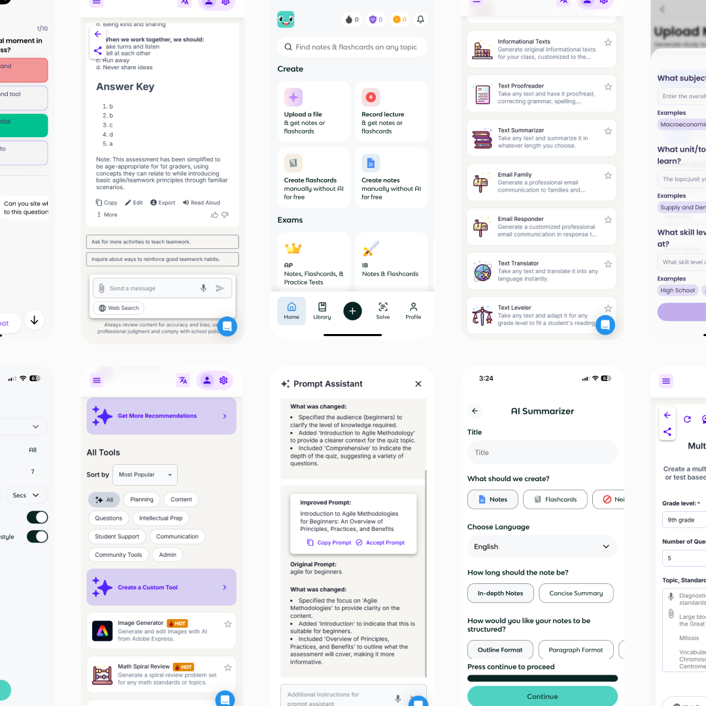
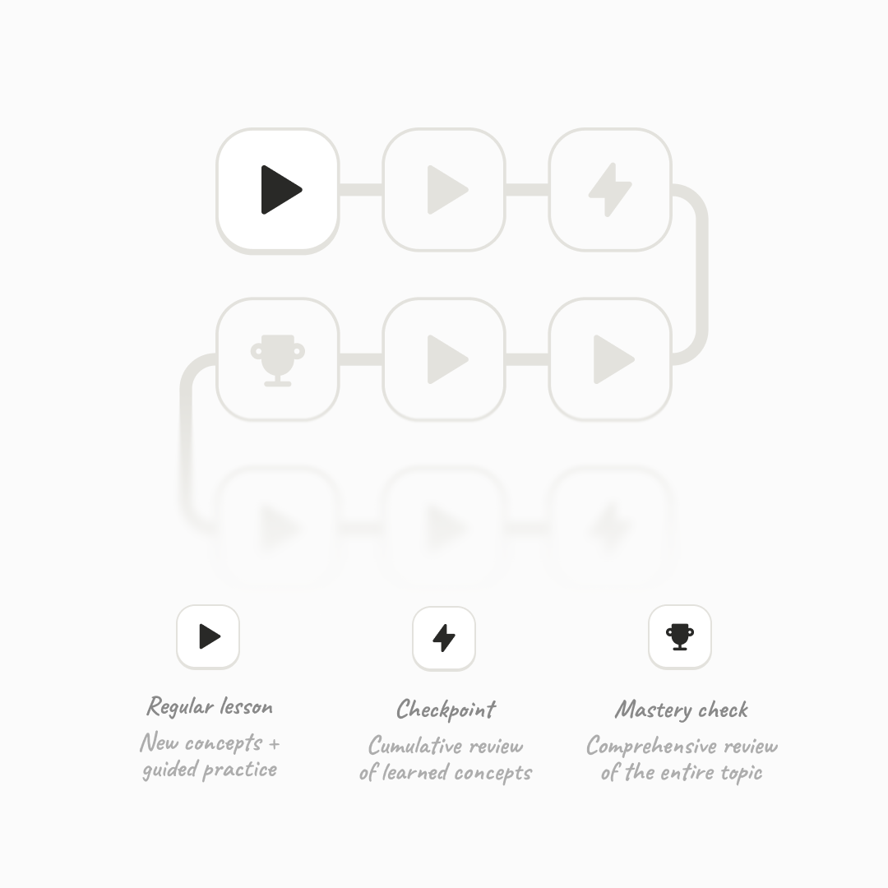
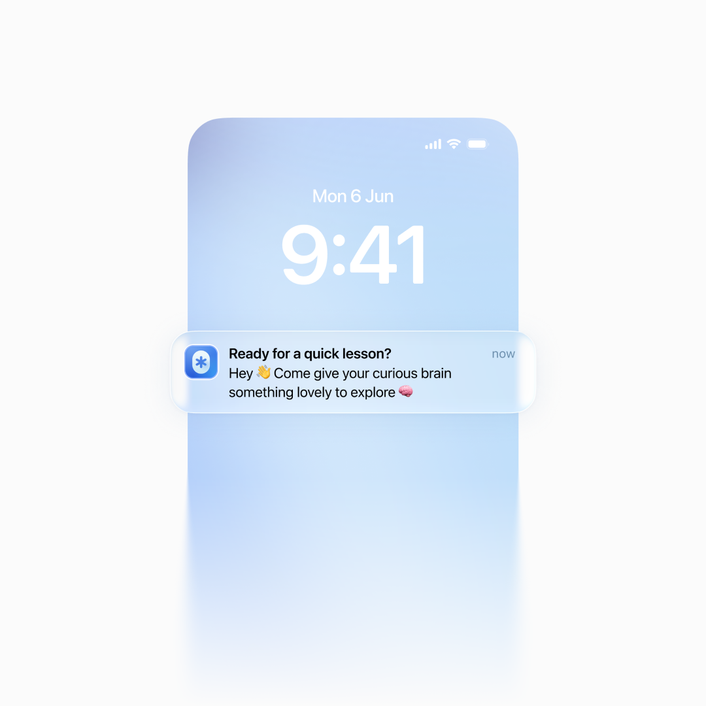
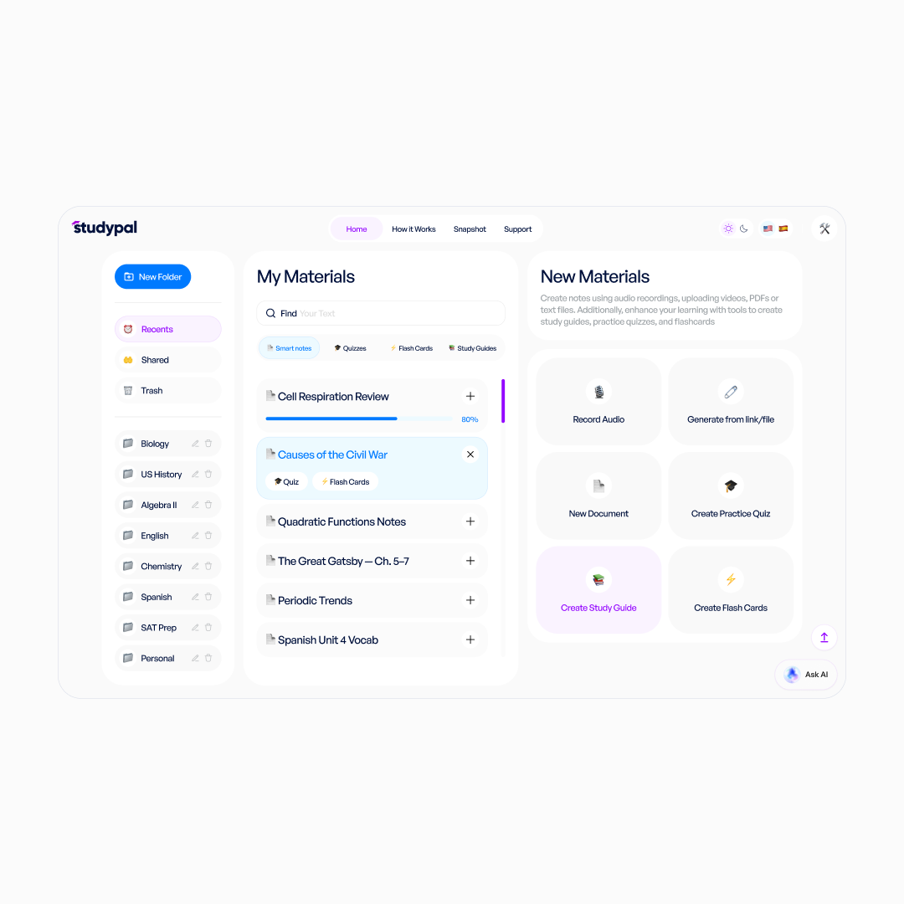
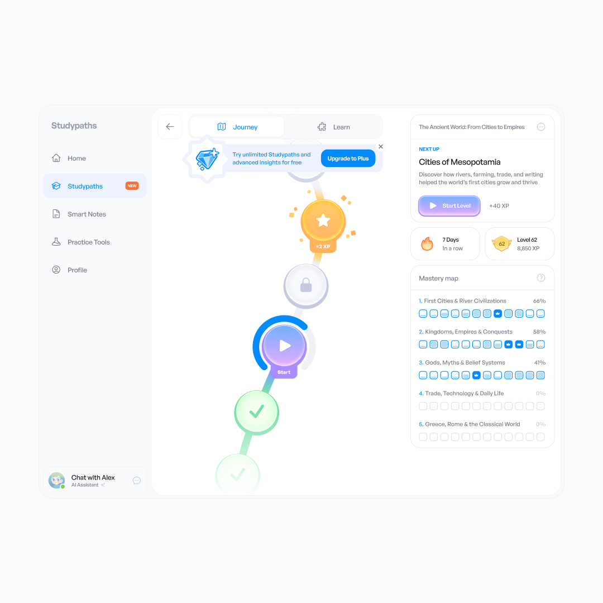
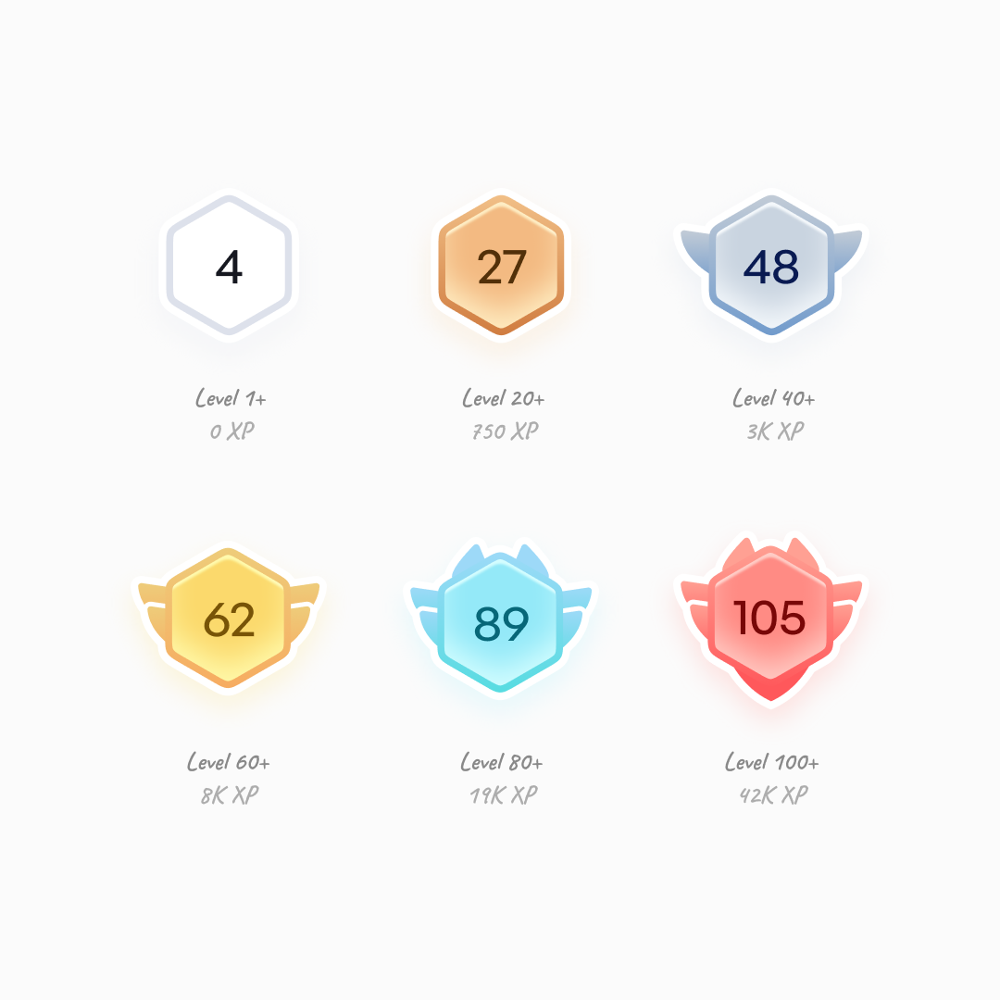
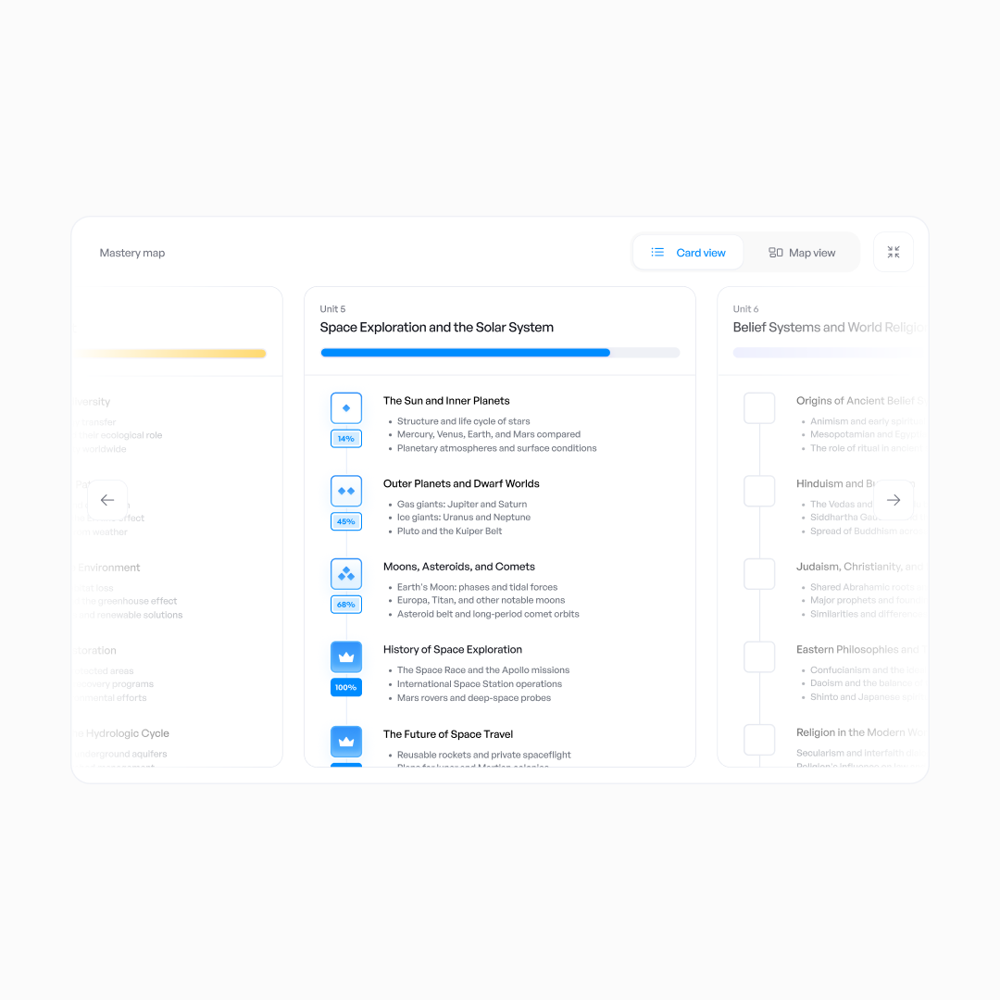
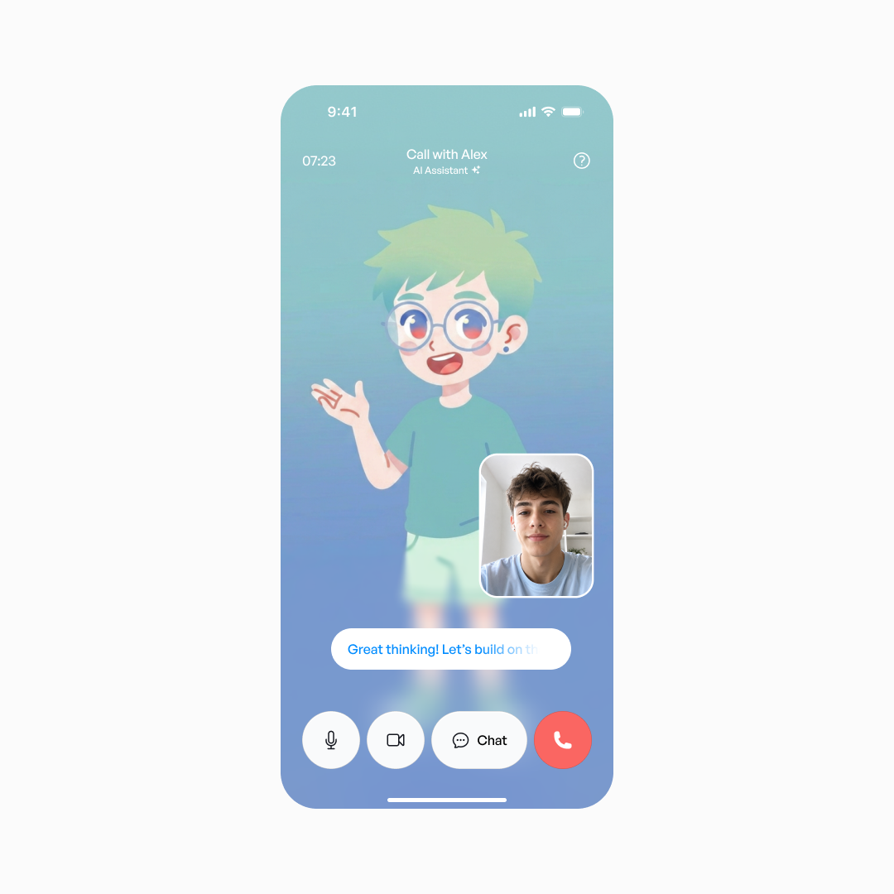

Lexie × Studypaths — how a thesis took over a live product
An AI-guided learning concept that moved from a master's thesis into an American product used worldwide.
I designed Lexie to turn uploaded materials into a game path of bite-sized stages, guided by an adaptive AI tutor that remembers the learner's progress.
I defended it as my master's thesis with honors, and the team behind a similar international learning product with 150,000+ users offered to acquire Lexie.
Instead, I joined the team to rebuild their product's core. The challenge was introducing a new game-path mode without disrupting existing users. It worked so well that it eventually gave the product its name.
The gap nobody was closing
If you've ever tried to teach yourself something, you know the problem usually isn't a lack of information, but a lack of guidance.
By late 2024, LLMs could act as genuine companions rather than just chatbots. That inspired the idea behind my master's thesis: using AI to guide self-directed learning.
I validated the need for better guidance through 15 in-depth interviews and a survey of around 200 people.
Existing solutions split into two camps. For example, StudyFetch, Knowt, and MagicSchool created tools like flashcards and quizzes from uploads but required extensive manual setup.

With competitors, setup felt like half the learning journey
On the other side, well-known platforms like Duolingo, Mimo, and Brilliant offered polished, gamified paths but no way to upload your own materials.
So I combined the best of both: user-owned materials, a low-friction start, and a guided game path.
The interviews and survey surfaced three core problems, each shaping a part of Lexie:
Problem one: hard to start
The goal was to reduce actions and decisions and get people learning quickly. First came onboarding.
Conventional onboarding is long to make users feel invested, but every question raises expectations that AI products could not always meet. I decided to keep it short.
Just enough onboarding to get out of the way
Next, course creation. Learners may not know a subject well enough to configure a course in detail, so I let Lexie make those decisions from a natural-language prompt instead of complex settings.
You can also just move the slider to adjust the course depth
There is a tradeoff: control shifts from the interface toward the material users choose and the prompts they write. But lowering the barrier to entry mattered more; deeper customization could come later.
Problem two: hard to track progress
My survey showed that most self-directed learning happened in short mobile sessions — during a commute or before bed. Yet progress requires a long-term relationship. How could the two be combined?
Duolingo was the obvious reference. I reviewed research on learning and found three core principles behind its approach:
Chunking. Stages take five to fifteen minutes, so they fit within working memory and get finished.
Retrieval practice. Learning through exercises improves retention more than rereading.
Spacing. Mixing new and previous material reinforces learning without overload.
I built Lexie around these principles, creating a familiar game path of short stages and varied exercises. The user taps “Continue learning”; Lexie chooses what comes next.

The anatomy of a game path
Exercises ranged from familiar formats like “Choose the Correct Answer” and “Match the Pairs” to more specific ones like “Highlight the Mistake” and “Fill in the Blanks.”
Every answer, right or wrong, comes with an explanation
Unusually for a game path, I also added lower-intensity stages such as “Review the Concept” and “Flashcards” to reinforce difficult topics.
Breaking a concept into cards makes memorization more focused and active
Each stage ends with encouragement and progress numbers, regardless of the result.
Different result messages keep things from feeling repetitive
Problem three: hard to stay focused and understand
This is where AI comes in: an adaptive tutor set up to remember each user's weak points and mistakes, provide relevant examples, and encourage them when stuck.
But how could Lexie prevent users from farming answers through AI hints while still helping those who needed them?
Hints are generated on the fly; Learn More opens chat with the prompt ready
After a couple of weeks of testing across users and stages, I settled on this system: a hint appears after 45 seconds of inactivity following a wrong attempt, or after 90 seconds with no attempt — and never when new material first appears.
Answer farmers must wait or ask in the chat every time — enough friction to discourage them — while anyone genuinely stuck gets timely help.
The finishing touches
The final details included a daily streak counter to reinforce the habit, plus smart reminders users could schedule — or leave up to the app.

Lexie learns when you tend to open it and gets better at timing reminders
The plot twist
Shortly before my thesis defense, Studypal — an American startup — approached the studio where I worked to redesign its product. By a lucky coincidence, its app let users upload materials and create quizzes and flashcards — exactly the space I already knew well.

Before the redesign, Studypal was a collection of study tools
The overlap was so close that the founders offered to acquire Lexie.
Instead, I joined the team to lead the redesign. But with more than 150,000 active users worldwide, every decision had to be handled carefully.
The core experience is already covered above, so I'll focus on the most interesting adaptations at scale.
How I redesigned Studypal
I started with a product audit and user survey about learning habits, difficulties, and new concepts such as a gamified path or a live AI call. Around 6% responded, and the overwhelming majority reacted positively.
Still, thousands relied on the existing tools daily. I kept them available on their own and used them as the foundation of Studypaths — the same game-path concept as Lexie — which eventually became the product's core.
Whoops, spoiler: Studypal would eventually become Studypaths — but not quite yet
I defined the core learning experience and overall design direction; the other two designers extended that direction across the remaining flows and broader visual system.
Most mechanics carried over from Lexie, refined by what worked the first time. For example, I added bonus stages, a course mastery map, and level-based progression.

The main screen after the redesign
Bonus stages appear every seven to twelve stages — just beyond two average sessions — and award extra XP, encouraging one more push. The mastery map shows users where they are in the course, reinforcing progress.
A yummy bonus stage nudges users to learn more while still feeling like a reward
As for level-based progression, users felt daily streaks were not enough. I added six milestones, each with a different decorative frame around the level number.
XP requirements follow a softened exponential curve: new users level up quickly, while later progress slows to sustain motivation.

Reaching the final frame takes 1,050 stages — about 122 hours of learning
What didn't make it
Alongside the features we shipped, we tested a few more ideas through prototypes and small surveys. Some never made it past that stage.
One example was a detailed course map. I thought it would provide context, but almost no existing users found it useful in testing.

Diamond completion icons did not survive testing either
The live AI call introduced in the survey was another concept. I designed a few mockups, but prototyping revealed it was too expensive and complex to build and maintain, so we moved it to the backlog.

Behind the simple UI, several AI models coordinate in real time
Outcome
The redesign eventually reached all 150,000+ users. With almost no product analytics, support tickets were the strongest adoption signal: within three or four weeks, questions and feedback about Studypaths outnumbered those about the standalone tools.
Most were clarifying questions or thank-you messages. Users found it easier to jump into a game-like course than configure everything themselves.
In a symbolic move, the founders soon renamed Studypal to Studypaths.
What I'd do differently
There's no point hiding it: I was lucky to encounter a product tackling the exact problem I had spent so long exploring. But I would do two things differently.
First, I would go deeper into AI's technical side: validating input, keeping output consistent, reducing hallucinations, and managing growing context. We solved these through trial and error, but earlier exploration would have saved considerable time.
Second, I would push harder for basic analytics before rollout. The redesign worked, but I cannot quantify how well.
Still, there is something deeply satisfying about having moved on from the team while Studypaths remains the product's core experience.